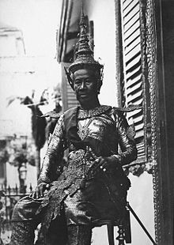

Sisowath (Khmer: ស៊ីសុវត្ថិ, Sisŏvôtthĕ [ˈsiːsoʋat]; 7 September 1840 – 9 August 1927) was King of Cambodia from 27 April 1904 to his death in 1927. He was the son of King Ang Duong and half brother of Prince Si Votha and King Norodom. He is the progenitor of the House of Sisowath.
Sisowath was given the birth name of "Ang Sar" (អង្គសោ).[1] When he was born, Cambodia was under joint Siamese and Vietnamese rule. The royal family lived in Battambang then under Siamese hegemony. Like his brother King Norodom, Sisowath was educated in the Siamese capital of Bangkok. He did not return to his native Cambodia until 1860, when his father and the ruling monarch, Ang Duong, died.
He hastily returned to Oudong, the royal capital of Cambodia, to prevent his half-brother, Prince Si Votha from seizing the throne. He succeeded, and his other half-brother, Norodom, became king. Although Norodom was more compliant, rebellion broke out in Cambodia, and soon the French, seeking control of Southeast Asia, forced Norodom to comply with a French protectorate over Cambodia. The French thus drove out the Thai and the Vietnamese officials, and Cambodia became a French protectorate.
Sisowath was enraged, and he exiled himself to Saigon in Vietnam in 1864, the other former overlord of Cambodia, in a show of defiance. The French, who also had control of Saigon, persuaded Sisowath to remain there under French "protection", as his life was in danger by the "rebels in Cambodia". In reality, the French used Sisowath as a tool to threaten Norodom. If Norodom was not following France's policies of reform, they could threaten Norodom with Sisowath and say that they would depose Norodom and replace him with Sisowath if he did not comply.
In 1867, when Cambodia was in open rebellion against French rule, King Norodom pleaded Sisowath to return to Cambodia to quell the uprising. Sisowath returned from Vietnam to Oudong and helped quell the uprising. In 1884, when the French took full control over Vietnam, Laos, and Cambodia, and also defeated Siam in a war in 1893, Cambodia became an open French colony, and the capital was moved from Oudong to Phnom Penh. Moving the royal court to Phnom Penh, Sisowath gave his full support to the French colonial regime. Norodom thus was compelled to name Sisowath his future successor.
In 1904, when Norodom died, Sisowath was crowned as king of Cambodia, a crown that would have gone to one of Norodom's son, Prince Yukanthor,were it not for the latter having a falling-out with the French. During his reign, Sisowath continued Norodom's role in government, where he was well rewarded by the French for his cooperation: they built him a new palace, gave him a steam-powered yacht, and supplied him with a complementary ration of 250 lbs of high-grade opium per year.[2] In 1927, he died in Phnom Penh and was given the posthumous title of Preah Karuna Preah Sisowath Preah Reacheanukot (Khmer: ព្រះករុណា ព្រះស៊ីសុវត្ថិ ព្រះរាជានុកូត). He was succeeded by his son and crown prince, Prince Sisowath Monivong. At the time of his death, he was the world's oldest monarch.
On April 24, 1904, the day King Norodom died, the Royal Crown Council met, gathering senior ministers and personalities of the kingdom, in order to elect the new sovereign. The Crown Council elected Samdach Oppareach Preah Sisowath (the Viceroy) as successor to his elder step-brother. He was crowned as Preah Bat Samdech Preah Sisowath Chamchakrapong Hariréach Barminthor Phouvanay Kraykéofa Soulalay Preah Chau Krong Kampuchea Thippadey (Khmer: ព្រះបាទសម្តេចព្រះស៊ីសុវត្ថិ ចមចក្រពង្ស ហរិរាជបរមិន្ធ្រភូវណៃ ក្រៃកែវហ្វាសុឡាឡៃ ព្រះចៅក្រុងកម្ពុជាធិបតី).